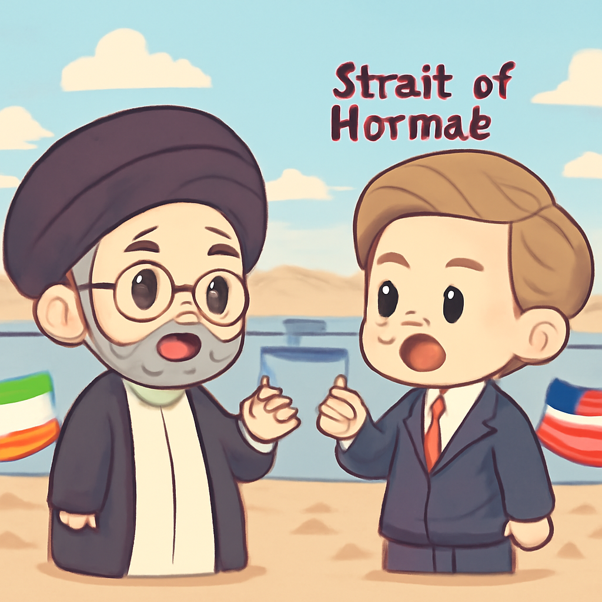

其一 · 伊朗 · 提議重新開放霍爾木茲海峽
伊朗表示將在七天內重開霍爾木茲海峽。

在伊朗提議重新開放霍爾木茲海峽的背景下，美國官員稱正在進行"建設性對話"，希望能改善緊張局勢。這條水道對全球石油運輸至關重要，任何變化都可能影響國際油價和經濟，特別是對依賴石油的國家。希望不要等到開會時才想起帶點心情！
🔗 原始新聞 ↗
2026-09-26 · 以古觀今，以笑抗愁
伊朗表示將在七天內重開霍爾木茲海峽。

在伊朗提議重新開放霍爾木茲海峽的背景下，美國官員稱正在進行"建設性對話"，希望能改善緊張局勢。這條水道對全球石油運輸至關重要，任何變化都可能影響國際油價和經濟，特別是對依賴石油的國家。希望不要等到開會時才想起帶點心情！
🔗 原始新聞 ↗
烏克蘭總統指出俄羅斯攻擊影響民生。
烏克蘭總統澤倫斯基表示，俄羅斯的攻擊目標是破壞人們的"普通生活"，尤其針對數據中心。這些攻擊不僅干擾了人們的連接和工作，還可能對烏克蘭未來的恢復帶來障礙。希望這些黑暗時刻能夠早日結束，讓人們重拾生活的光明。
🔗 原始新聞 ↗
美國最高法院支持特朗普檢查選民身份。
美國最高法院裁定，特朗普可以使用有爭議的數據庫來檢查選民的公民身份。這引發了對選民登記的可靠性質疑，許多人擔心此舉會導致無辜公民被錯誤刪除。選舉的公平性再次成為焦點，期待法律能夠明確，別讓選舉變成一場真人秀！
🔗 原始新聞 ↗
教宗在法國強調AI對人性的威脅。
教宗在法國訪問的第一天警告說，隨著人工智慧的快速發展，人類可能會失去人性。他提醒大家在追求科技的同時，別忘了保留人類的情感與價值觀。聽到這話，未來的智能助手可能要學會怎麼擁抱人類的情感，而不是只會回答"是"或"否"！
🔗 原始新聞 ↗
南非新任美國大使駁斥種族滅絕說法。
南非新任美國大使在接受BBC訪問時表示，所謂的"白人種族滅絕"並不存在，這種說法是誇大的。他的立場讓人們對南非當前的種族緊張局勢有了新的思考。希望這個話題能夠引發更多理性的討論，而不是讓人們的情緒像過山車一樣起伏！
🔗 原始新聞 ↗